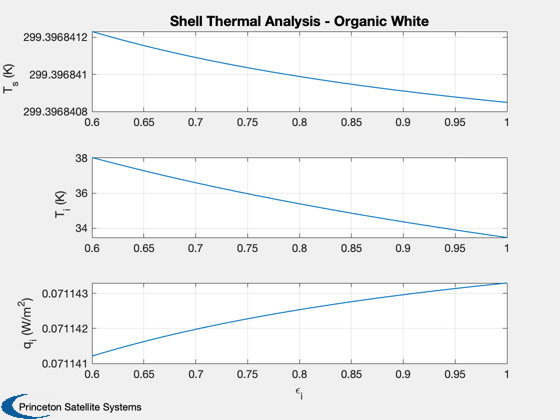
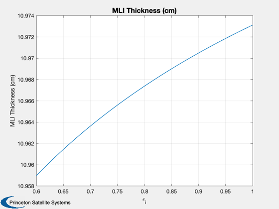
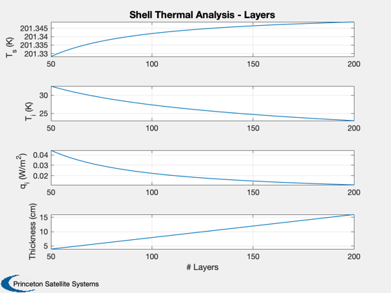

Contents
Shell analysis
Design a MLI blanket to shield the solar radiation. The RadiationShield function computes the optimal density of the MLI blanket given the number of layers.
%-------------------------------------------------------------------------- % See also RadiationShield %-------------------------------------------------------------------------- %-------------------------------------------------------------------------- % Copyright (c) 2018 Princeton Satellite Systems, Inc. % All rights reserved. %-------------------------------------------------------------------------- % emissivity of the inner surface epsI = linspace(0.6,1.0); d = RadiationShield; d.n = 200; % layers d.epsS = 0.9; % White organic d.alphaS = 0.3; % absorption StructToText(d); tS = zeros(1,length(epsI)); tI = zeros(1,length(epsI)); qI = zeros(1,length(epsI)); for k = 1:length(epsI) d.epsI = epsI(k); [tS(k), tI(k), qI(k), ~, out] = RadiationShield( d ); tMLI(k) = d.n/out.nD; end yL = {'T_s (K)', 'T_i (K)' 'q_i (W/m^2)'}; Plot2D(epsI,[tS;tI;qI],'\epsilon_i',yL,'Shell Thermal Analysis - Organic White'); Plot2D(epsI,tMLI,'\epsilon_i','MLI Thickness (cm)')
n: 200 cS: 2.98e-08 cR: 5.86e-10 gamma: 2.84 epsTR: 0.043 alphaS: 0.3 epsS: 0.9 epsI: 0.2 qS: 1367 tol: 1 
Vary layers in blanket
d.epsI = 0.7; nLs = linspace(50,200); d.epsS = 0.88; % solar reflector d.alphaS = 0.06; for k = 1:length(epsI) d.n = nLs(k); [tS(k), tI(k), qI(k), ~, out] = RadiationShield( d ); tMLI(k) = d.n/out.nD; end yL = {'T_s (K)', 'T_i (K)' 'q_i (W/m^2)' 'Thickness (cm)'}; Plot2D(nLs,[tS;tI;qI;tMLI],'# Layers',yL,'Shell Thermal Analysis - Layers'); %-------------------------------------- % $Date$ % $Id: 8fef843bc864625f48c6356739deaae855706931 $